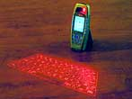
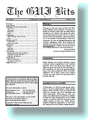

|
Recent Degel Client News
-
Summer 2005: Orange releases the
Talk Now for Series 60 Push-to-Talk application developed by Degel.
-
December 2004: Natural Widgets releases Natural Recorder for Series 60, developed by
Degel. Natural Recorder records incoming and outgoing mobile
conversations that can be played back with the device's built-in
recorder application.
-
November 2004: iambic releases version 2.2 of Agendus for Symbian, written by Degel. This
version adds several weather options, the quote of the day, and
address mapping capability.
-
June 23, 2004: Degel's clients continue to sweep the Handango
Champion awards! iambic's Agendus for
P800, written by Degel, was a finalist for best Symbian OS
Productivity App. Mobility
Electronics won Best Symbian Business Application, and MobiMate
walked away with three awards: Best Travel Application for
Symbian and Palm as well as Symbian Developer of the Year.
Congratulations to our clients, and all the other Handango Champions!
-
April 1, 2004: iambic releases version 2.0 of
Agendus
for Symbian, again crafted by Degel. This improved
version offers many more views, support for icons, and many other
cool new features.
-
March 22, 2004: AOL releases ICQ for Symbian OS UIQ
and Series
60 platforms for sale on Handango. These products, written
by Degel, make true ICQ instant-messaging available worldwide on
all GPRS services, and quickly rose into Handango's "top-10"
lists.
-

March 18, 2004: VKB announces virtual keyboard fully
integrated with the Siemens SX-1 Symbian handset, with built-in
Degel drivers.
From the Media
-
September 2005: Symbian publishes a tech paper by Degel's Andy Weinstein: Using an indirection DLL for multi-UI platform support.
-
July 2004: Smart Mobile Assets interviews
Degel's Larry Rublin.
-
January 2004: SymbianOne profiles
Degel and our successes porting Palm applications to Symbian
OS.
-
October 2003: Forum Nokia case study analyzes how Degel ported BugMe!
to Symbian OS Series 60.
-
August 2003: Symbian has published an article describing how Degel ported BugMe! to
Symbian OS Series 60 and UIQ.
-
June 2003:
Handango loves BugMe!
-
May 8, 2003:
Jerusalem Post:
Degel Turning a Dream into Reality.
-
April 20, 2003:
Israel21c showcases Degel's achievements.
-
October, 2002:
Symbian has published an
article describing Degel's experiences in
moving from Windows programming to developing Symbian OS native
applications.
Older Degel News
-
November 6, 2003: iambic releases
Agendus
for Symbian v1.0. This application, ported by Degel from Palm
OS to the Sony-Ericsson P800, offers great integration between
the phone's contact manager, contact list, messaging, and to-do list.
-
October 20, 2003: Degel Software Ltd. joins Symbian Platinum Partnership. Ian Weston,
Vice President of Developer Partnerships at Symbian explains:
"High-quality end-user applications, both networked and
standalone, have become a fundamental requirement for today's
mobile devices. We are pleased to have Degel join the Symbian
Platinum Program and bring its application development expertise
to the Symbian ecosystem."
-
July 25, 2003: Electric Pocket's BugMe! for
Symbian has won Handango's 2003 Champion Award for Best Symbian Productivity
Application! This application, developed by Degel, lets users
quickly record multimedia reminders on their Symbian phones. See
the full news story.
-
July 1, 2003: O2 Germany
launches ICQ mobile instant messaging client, developed by Degel.
-
February 24, 2003: Electric Pocket has now released the
Sony-Ericsson P800 version of BugMe! developed
by Degel.
-
December 30, 2002:
Degel ports Palm bestseller BugMe! to
Symbian. We have completed a port of this great palm product
to Series 60 devices, including the Nokia 7650 and 3650. This
new version keeps the great usability for which BugMe! is
famous, and adds support for the phone's camera, address book,
and voice recording.
-
Nov 16 2002: ICQ makes Nokia 9210 client (developed by Degel)
available for download.
-
Sep 10 2002 - ICQ
chooses Degel to
develop mobile phones client.
The GUI Bits

"The GUI Bits" is an occasional newsletter which we publish for the
benefit of our clients: past, present, and future. Here are some recent
issues in PDF format for your viewing and hyperlinking pleasure.
The online version of the The GUI Bits has been prepared with Adobe
Acrobat, and is best viewed using Acrobat Reader. If you do not have the
Acrobat reader, you can download a free copy from the
Adobe Web site.
Volume 3, Issue 1 - February 2002
Volume 2, Issue 2 - September 2001
Volume 2, Issue 1 - May 2001
|